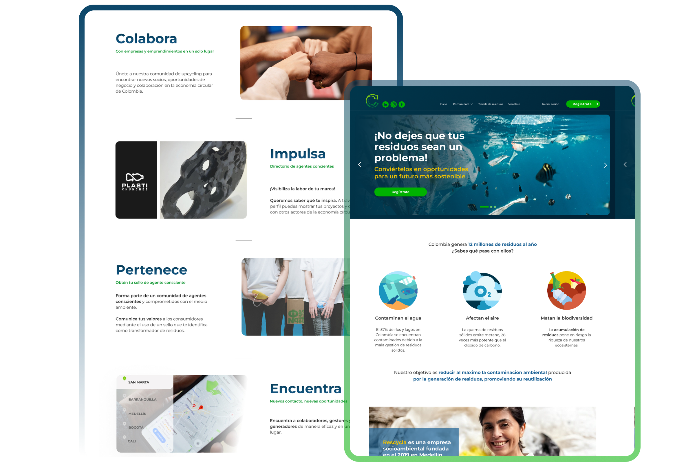
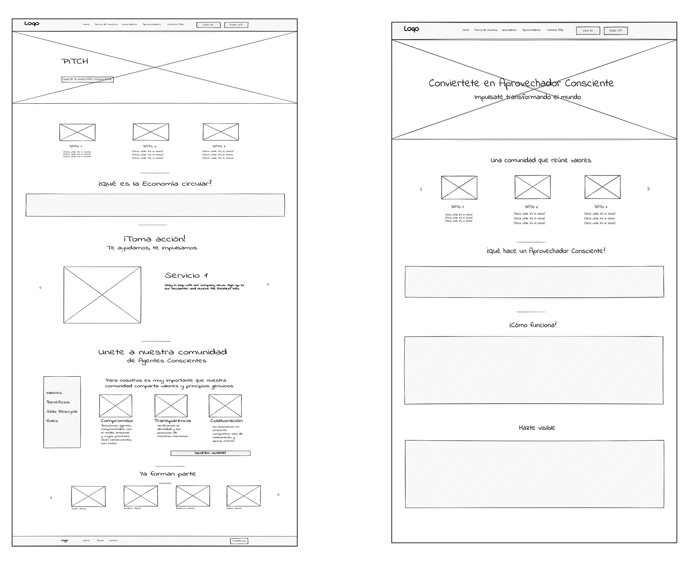
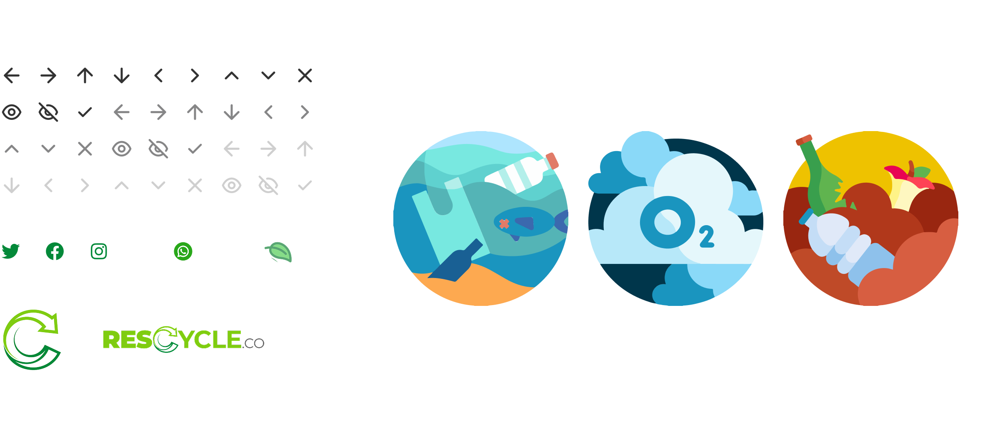

PALM × Rescycle · Circular economy · Mar – Jul 2023
Between Rescycle’s idea and what PALM could build.
We redesigned the landing page and upcyclers community of a Colombian circular-economy platform. My work included agreeing with the CPO and COO on what was possible and what was scalable.
Each stone is a metric from this case.
Moderated tests and interviews
Industry professionals surveyed
Companies in the UX/UI benchmark
Guerrilla tests
Context
Rescycle is a Colombian upcycling platform that connects people who generate waste with those who can transform it. The business idea was Rescycle’s; the technology was built by PALM, a consultancy. The platform was already live but had no clear experience identity: there was plenty of waste on offer and little demand from people who could use it.
We were asked for two pieces: a public section for recyclers — plans, sign-up, terms and conditions — and a homepage that explained the concept and invited both recyclers and waste generators to join. The business goal: add 40 upcycling companies in four months.

My rolethe bridge between two companies
There were three designers. Besides design, I took on part of the product work: agreements and negotiations between Rescycle and PALM, and running the showcase and feedback sessions.
Design & research
- Interviews, surveys, benchmark and guerrilla tests
- User journey and sign-up pain points
- Wireframes, design system and prototype
Agreements & negotiation
- Agreed with the CPO and COO on what was possible and what was scalable
- Translated Rescycle’s idea into what PALM could develop
Showcases & feedback
- Led the showcase and feedback sessions
- Presented progress and gathered feedback from both sides
- The landing page design was adopted
The bottleneckthere is waste, but nothing connecting it
Rescycle had a platform and plenty of material on offer, but demand wasn’t arriving. The research showed why: the system around waste has frictions no single screen could solve.
Materials arrive unsorted, uncleaned and without a technical data sheet.
Companies can’t trust what they buy or plan accurately.
Every logistics arrangement and price is negotiated case by case, with no regulation.
Prices vary widely and the actors in the system barely communicate.
“La tecnología debe servir al medio ambiente, no al revés.”
Plastichunches
“Crear una comunidad de personas que compartan tus valores y principios le da sentido a tu trabajo.”
Akasha Design Lab
What I did
- We combined 5 moderated tests and interviews, 24 surveys, a 10-company benchmark, 7 guerrilla tests and 3 usability tests after the mid-fidelity wireframes.
- We turned the pain points — inconsistency, price fluctuation, low standards and unreliable information — into six design proposals.
The negotiationRescycle’s idea and what PALM could build
Rescycle had a product vision. PALM, the consultancy building it, had technology and scale limits. My part was reaching agreement between the two.
A platform that would communicate the circular economy and call a community together.
With 40 upcycling companies as the goal within four months.
What could be built and scaled with their technology.
A consultancy that had to deliver something buildable, not just desirable.
What I did
- Agreed with the CPO and COO on what went in as MVP, separating what was possible from what was scalable.
- Led the showcases and feedback sessions so both sides saw the same design and decided with the same context.
What was decided
The landing page design was adopted.
- The proposals were framed as MVPs designed to solve the pain points found in the research.
Decisionswhat we proposed
Community through narrative and a human tone
Storytelling and shared values to build community, in a warm voice.
Visibility for companies
A directory with a public profile per company and visible strategic partnerships that build trust.
Information that builds trust
Search by requirement and location, technical data sheets for the waste and verification of sustainable practices.
Headings in Bold from 64 to 32, content in Semibold and Regular, buttons in Bold 18.
Primary #3E8635, #57B22E, #123A5A and #2E5F8A; secondary #4A9CC4 and #E3C13F; neutrals from #2D2D2D to #FFFFFF.
Resultwhat remained
Adoption
Evidence gathered
Project goal
The evidence figures come from the research process. The 40 companies were the goal set by the project.
Evidencefrom wireframe to prototype
Wireframes

Final prototype
Icons & illustrations

What I learned
Designing is also agreeing on what’s possible
A good business idea and a good technical solution don’t line up on their own. Part of the job was putting both sides in front of the same design and deciding what got built.
“Technology should serve the environment, not the other way around.”
Plastichunches · interviewed company